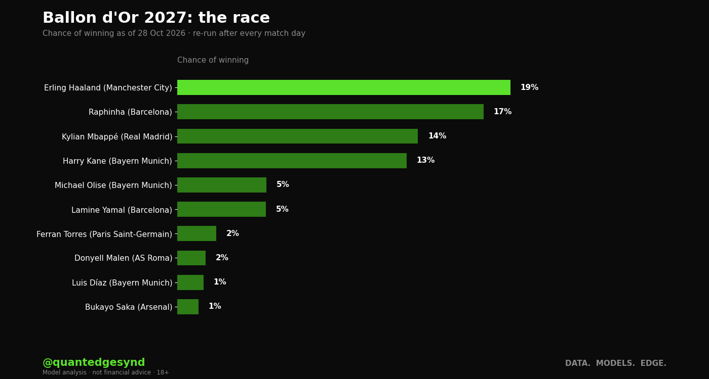

Erling Haaland leads our Ballon d'Or 2027 race on 19%, ahead of Raphinha (17%), Kylian Mbappé (14%) and Harry Kane (13%). It moves after every match day.
- What the voters reward. We learned it from 26 votes, 2000 to 2026 (there was no award in 2020). Goals, the Champions League and the league title move votes, and so do World Cups and European Championships.
- Last time. Harry Kane won the 2026 award.
- 2027 is a club year. There is no World Cup or European Championship in the summer of 2027, so the award should turn mainly on club seasons. The big tournament that summer is the Africa Cup of Nations (June to July 2027), which the model does not count.
- How good is it? Tested on each year it had not seen, its favourite was the winner in 13 of 26 years. "The top scorer at the Champions League winner" got 10.

The race
| Player | Club | Chance of winning |
|---|---|---|
| Erling Haaland | Manchester City | 19% |
| Raphinha | Barcelona | 17% |
| Kylian Mbappé | Real Madrid | 14% |
| Harry Kane | Bayern Munich | 13% |
| Michael Olise | Bayern Munich | 5% |
| Lamine Yamal | Barcelona | 5% |
| Ferran Torres | Paris Saint-Germain | 2% |
| Donyell Malen | AS Roma | 2% |
| Luis Díaz | Bayern Munich | 1% |
| Bukayo Saka | Arsenal | 1% |
| Nicolas Jackson | Aston Villa | 1% |
| Tasos Douvikas | Como | 1% |
| Marcus Thuram | Inter | 1% |
| Alexander Isak | Liverpool | 1% |
| Lautaro Martínez | Inter | 1% |
How it works
Each simulated season from our league and Champions League forecasts gives every player a goal total, a league title or not, and a Champions League run. The model scores each player the way past votes did, keeps a shortlist of thirty and picks a winner. Run 10,000 times, that gives each player's chance.
What it can't see
It reads goals, so it underrates midfielders and defenders who win on other things, as Luka Modrić did in 2018 and Rodri in 2024. Domestic cup and other European goals are not counted yet, though past winners' totals included them, and nor is anything outside the top five leagues and the Champions League. Not scored yet: the award is in late 2027, and every update until then is kept.
The other forecasts
Premier League forecast · La Liga forecast · Serie A forecast · Bundesliga forecast · Ligue 1 forecast · Champions League forecast · Injury risk